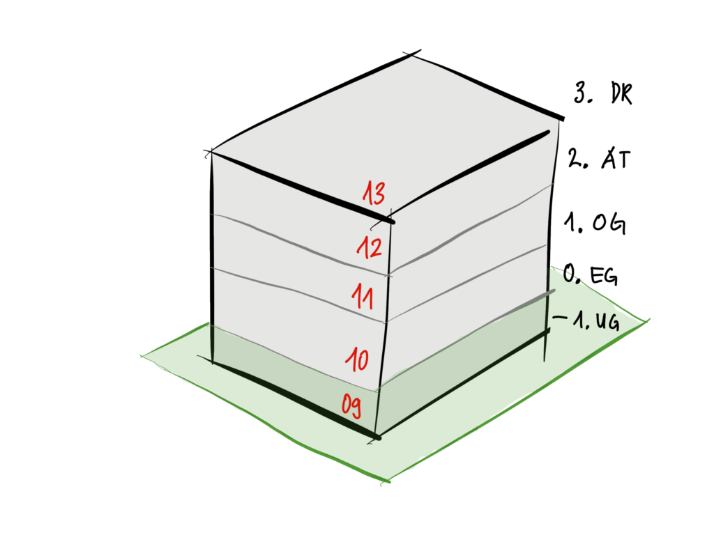

Visuelle QS Ifc
Export
Die Wahl des richtigen Werkzeugs in ArchiCAD ist entscheidend für einen erfolgreichen IFC-Export. Während Standardwerkzeuge wie Wand, Decke und Dach mit klar definierten Parametern für Länge, Breite und Höhe arbeiten, verhält sich das Morph-Werkzeug eher wie eine digitale Knetmasse ohne feste Parameter. Im Folgenden zeige ich anhand von fünf Testboxen, wie sich die verschiedenen Werkzeugeinstellungen auf den Export auswirken. Auch wenn die Beispiele ArchiCAD-spezifisch sind, verdeutlichen sie ein grundlegendes Prinzip: Die Wahl des Modellierungswerkzeugs hat direkten Einfluss auf die Exportqualität.
{kind=link}
Fehlermeldung Archicad
Fehlermeldungen beim Export sollten nicht einfach weggeklickt werden, sondern genau geprüft werden. Auch wenn die Aussagekraft oft gering ist, geben sie wichtige Hinweise auf mögliche Probleme. In diesem Fall fehlen fünf Elemente beim Export - der Grund sind 0mm starke Elemente.
{kind=link}
Exportprotokoll Archicad
Das Exportprotokoll bietet einen detaillierten Einblick in den Exportvorgang. Neben den Berechnungszeiten für die einzelnen Prozessschritte zeigt es auch mögliche Probleme wie korrupte Geometrien oder doppelte GUIDs auf - und das sogar ohne einen IFC-Export durchzuführen.
Bei unserem letzten Export wurden Probleme mit 5 von 21 Elementen festgestellt. Diese sind im unteren Bereich des Protokolls mit ihren eindeutigen GUIDs aufgelistet. Mit diesen Informationen können wir nun gezielt nach den betroffenen Elementen suchen und die Ursachen beheben.
{kind=link}
Die manuelle Suche nach problematischen Elementen ist zeitaufwändig, weshalb eine saubere Modellierung von Anfang an wichtig ist. Mit dem Tool "Suchen & Aktivieren" können in ArchiCAD die betroffenen Elemente anhand ihrer GUID schnell gefunden werden. Ähnliche Suchfunktionen stehen auch in den meisten IFC-Viewern zur Verfügung.
{kind=link}
Weder der Allgemeine IFC-Übersetzer 2x3 noch das IFC-Schema 4 in ArchiCAD 25 können die markierten Elemente exportieren. Die Lösung liegt in den Übersetzer-Einstellungen: Mit aktiviertem "Exakter Geometrieexport" funktioniert der Export ohne Fehlermeldung. Aber Achtung diese Einstellung hat dann wiederum andere Auswirkungen.
Visuelle Prüfung
Geometrie-Prüfung Archicad
Die visuelle Prüfung ist essentiell, besonders bei Teilmodellen und Rohbauexporten. Folgende Elemente sind besonders fehleranfällig und sollten genau geprüft werden:
- Öffnungen (Fenster, Türen)
- Solid-Befehle (Gefälle)
- Verschnitte (Wandecken, Geschossübergänge)
- Umbau-Filter
- Schichteinzüge
{kind=link}
Eine saubere 3D-Modellierung ist wichtiger als die 2D-Darstellung. Kritische Elemente sollten zu Projektbeginn geprüft werden, danach genügen Stichproben. Frühzeitige Prüfungen ermöglichen es, die Arbeitsweise des Teams durch Favoriten, Templates und Schulungen zu optimieren.
Geschosse
Bei den Geschossen kontrolliere ich immer deren Bezeichnung. Diese sollten: - Gleich viele Stellen haben (z.B. 08UG, 30OG statt 8UG, 10OG) - Durchgängig nummeriert sein - Die Zahl immer vorne haben - Keine negativen Zahlen für UGs verwenden (-2UG vermeiden) - 
{kind=link}
Dies ist wichtig für eine korrekte Sortierung. Hier einige Beispiele:
Variante 1
| Unsortiert | Sortiert |
|---|---|
| AT04 | AT04 |
| OG03 | EG00 |
| OG02 | OG01 |
| OG01 | OG02 |
| EG00 | OG03 |
| UG01 | UG01 |
| UG02 | UG02 |
Variante 2
| Unsortiert | Sortiert |
|---|---|
| 04AT | 00EG |
| 03OG | 01OG |
| 02OG | 01UG |
| 01OG | 02OG |
| 00EG | 02UG |
| 01UG | 03OG |
| 02UG | 04AT |
Variante 3 (Empfohlen)
| Unsortiert | Sortiert |
|---|---|
| 14AT | 14AT |
| 13OG | 13OG |
| 12OG | 12OG |
| 11OG | 11OG |
| 10EG | 10EG |
| 09UG | 09UG |
| 08UG | 08UG |
Empfehlung: Starte die Nummerierung vom Erdgeschoss aus (z.B. 10EG). Dies erlaubt:
- Flexible Erweiterung nach oben und unten
- Logische Nummerierung (EG=10, 1.OG=11, 1.UG=09)
- Konsistente Sortierung in allen Programmen
IFC-Entitäten
Die Kontrolle der IFC-Entitäten sollte systematisch erfolgen:
-
Stichprobenartige Prüfung der Property Sets (Psets):
- Sind alle erforderlichen Psets vorhanden?
- Enthalten die Psets die korrekten Informationen?
- Wurde z.B. die Information "load bearing" korrekt auf das Standardfeld übertragen?
-
Prüfung in verschiedenen IFC-Viewern:
- IFC-Dateien können in unterschiedlichen Viewern verschieden interpretiert werden
- Besonders bei nicht-standardkonformen IFC-Entitäten können Probleme auftreten
- Die Fehlerquelle liegt nicht immer beim Export selbst
-
Standardeigenschaften:
- Wichtige Eigenschaften wie "tragend/nicht tragend" müssen auf den definierten Standardfeldern liegen
- Nur so funktionieren automatisierte Prüfroutinen zuverlässig
{kind=link}
Effiziente Prüfmethoden
BIMCollab Zoom:
- SmartViews ermöglichen das Filtern und Einfärben von Modellinhalten
- Vergleichbar mit grafischen Überschreibungen in ArchiCAD
- Beispiel: Automatische Einfärbung von Fenstern nach Typennummer
- Ermöglicht schnelle visuelle Kontrolle von Typen und deren Zuordnung
{kind=link}
Solibri:
- Bietet umfangreiche Auswertungsmöglichkeiten
- Beispiel: Gruppierung und Einfärbung von Fassadenpaneelen nach Größe
- Verbessert das Verständnis der Modellinformationen durch visuelle Darstellung
- Unterstützt die Optimierung des Modells
{kind=link}
Datenbasiert prüfen
Excel
Excel bietet effiziente Möglichkeiten zur Prüfung von Konventionen und Duplikaten, ohne dass spezielle Prüfsoftware erforderlich ist:
- Unter "Daten" > "Datenüberprüfung" können einfache Validierungsregeln erstellt werden
- Tabellen lassen sich aus BIMCollab Zoom als CSV exportieren und in Excel analysieren
- Nach Anpassungen kann die Excel-Datei wieder in ArchiCAD importiert werden
Beispiel für Prüfungen:
- Spalte 1: Validierung von Namenskonventionen
- Spalte 2: Balkendiagramm zur Visualisierung der Rahmenbreiten
- Spalte 3: Farbcodierte Kategorisierung der Rahmenhöhen
{kind=link}
PowerBI
PowerBI bietet umfangreiche Möglichkeiten zur Datenanalyse und Visualisierung. Mit interaktiven Dashboards können Datenabhängigkeiten anschaulich dargestellt werden, was eine neue Perspektive auf die Modellinformationen ermöglicht. Viele Tools verfügen über direkte PowerBI-Schnittstellen. Alternativ können CSV-Exporte verwendet werden, die bei konsistenter Speicherung unter dem gleichen Pfad das Dashboard automatisch aktualisieren.
Ein praktisches Beispiel: Durch die Zusammenführung von etwa 50 IFC-Dateien verschiedener Projektstände in einem Modell und den Export als CSV-Bauteilliste, lassen sich Veränderungen wie Volumenänderungen zwischen den Projektständen effizient vergleichen und analysieren. Dies ermöglicht eine transparente Dokumentation der Projektentwicklung und quantifizierbare Aussagen über Änderungen in verschiedenen Projektphasen.
{kind=link}
Veröffentlicht am: 2022-04-04 | Code: ac640-1000 | Autor: Manuel Emmenegger | bimdo.ch
Schlagwörter: Archicad, Export, IFC, Qualitaetskontrolle | Original: Deutsch